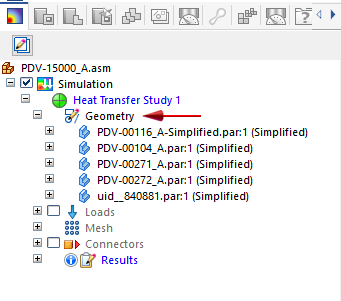

Suppress, unsuppress, and remove study geometry
In an assembly model, you can temporarily remove a part, component, or feature from consideration in a simulation study using the Suppress command. When you mesh and solve the study, the geometry that is suppressed and its associated loads, constraints, and connectors are not included in the solution. Suppressing individual parts in a large assembly with many components makes it easier to test the study design on a subset of the study geometry.
After you test the effect of suppressing geometry, you can use the Unsuppress command to restore the geometry and its associated simulation objects.
Use the Remove command when you want to remove a body and its dependent simulation objects from the study.
In Solid Edge Simulation, these shortcut commands are available on the context menu for parts selected in the Simulation pane→Geometry node.
Suppress study geometry
Use the following process to suppress individual bodies (such as a part, subassembly, sheet metal feature, or mid-surface) within the same simulation study.
-
Open an assembly with a previously solved study, and double-click the study name to activate it.
-
In the Simulation pane, expand the Geometry node, right-click the body you want to test, and then select Suppress.

The suppressed icon
 indicates the body will not be evaluated in the simulation results. Loads, constraints,
connectors for suppressed geometry go out of date. The mesh for the suppressed body
is deleted.
indicates the body will not be evaluated in the simulation results. Loads, constraints,
connectors for suppressed geometry go out of date. The mesh for the suppressed body
is deleted. -
Right-click the study name, and choose Mesh to mesh the study, and then Solve .
When processing completes, the study results are displayed in the Simulation Results environment.
-
After you review the results, click Close Simulation Results.
Restore suppressed geometry
To restore the suppressed body (as well as the related loads, constraints, and connectors):
-
In the Simulation pane, expand the Geometry node.
-
Right-click the suppressed body and select Unsuppress.
Associated loads, constraints, and connectors are restored along with the geometry, but the parent mesh is out of date.
-
Right-click the study name, and choose Mesh to mesh the study, and then Solve .
Remove geometry from a study
In a study of a large assembly, you can speed its processing by removing bodies that do not directly affect the simulation. Removing the geometry from the study does not remove it from the model.
-
In the Simulation pane, expand the Geometry node.
-
Right-click the part you want to remove from the study and select Remove.
The body is removed from the Geometry node in the Simulation pane, but not from the model. Simulation objects in the study that depend on the removed geometry (loads, constraints, connectors, results) go out-of-date. The body mesh also is removed.
-
Mesh and solve the study to regenerate the mesh and the results.
It is best to use this option when the removed bodies:
-
Do not directly affect the operation of the area you are studying or have limited impact on it.
-
Are not close to the area you are studying.
-
Can be estimated through loads and constraints applied to other bodies included in the study.